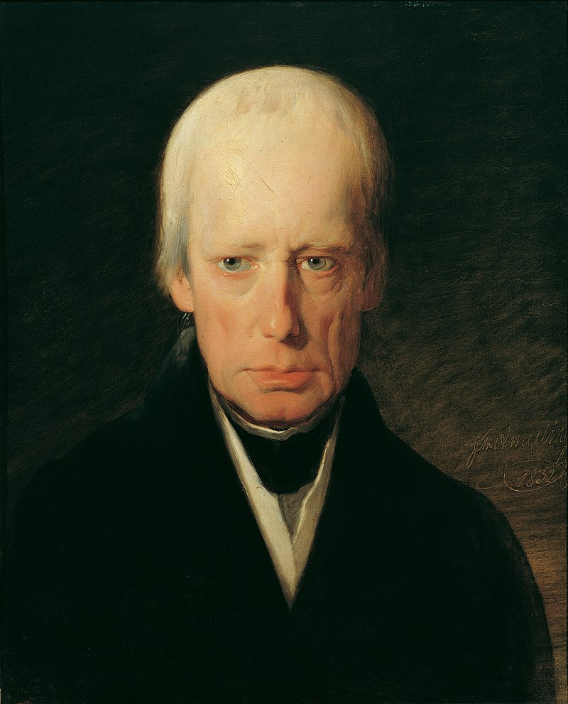
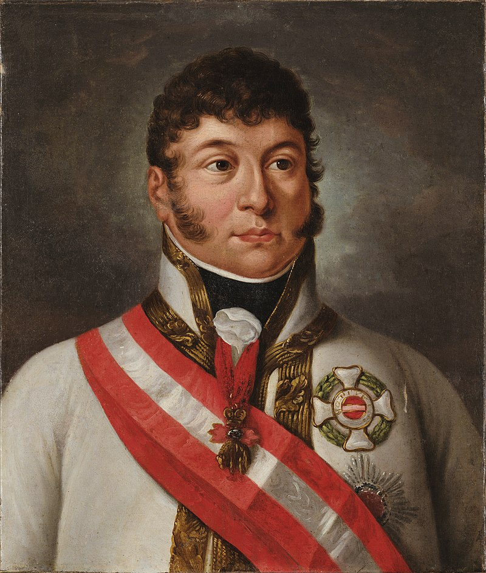
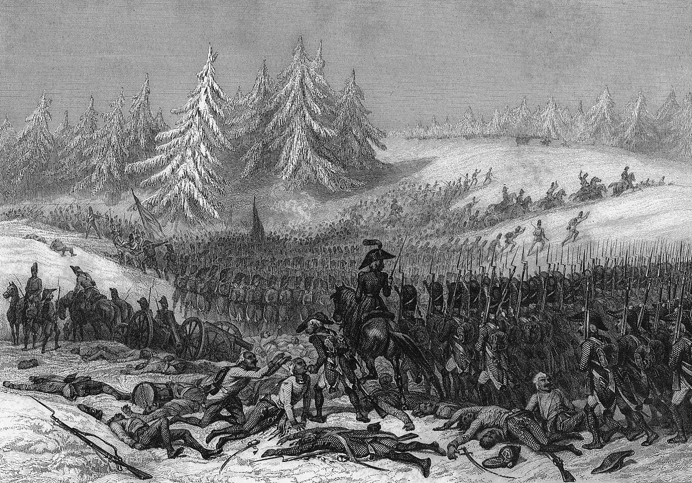
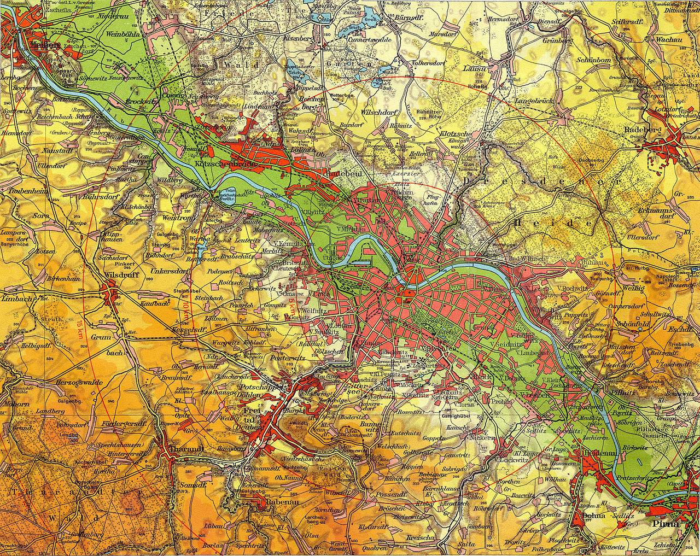

드레스덴 전투 (4) - 학부모까지 참석하는 조별 과제
게시: 2024-03-11T06:30:57+09:00
애초에 보헤미아 방면군 사령관 자리는 결코 쉬운 직장이 아니었습니다. 연합군의 자타공인 주력부대인 이 강력한 20만 대군의 지휘권은 상식적으로 가장 많은 병력을 대는 러시아군 수장이 맡는 것이 맞겠으나, 중립으로 있어도 되지만 유럽의 대의를 위해 이 한 몸 던진다는 생색을 내며 참전한 오스트리아에 대한 보상조로 오스트리아 장성에게 주어진 것이었습니다. 그러니 보헤미아 방면군의 지휘권에는 시작부터 러시아의 입김이 강하게 들어갈 수 밖에 없없습니다. 게다가 애초에 전쟁이란 많은 사람이 죽고 사는 심각한 사업인데, 이익이 상충되는 여러 나라가 서로 힘을 합하는 것 자체가 쉬운 일이 아니었습니다. 연합군의 작전이란 마치 학교에서 하는 조별 과제 같은 프로젝트였습니다. 약한 프로이센과 대국 러시아 둘이서 연합군을 구성할 때도 삐그덕거리는 일이 많았는데, 원래 러시아와 쌍벽을 이루던 제국인데다 홈그라운드의 이점을 가진 오스트리아가 합류하면서 삐그덕거리는 소음은 더욱 심해졌습니다. 그런 혼란의 도가니를 아예 엎어버리는 존재가 바로 세 연합국의 세 군주들, 그 중에서도 군계일학이자 가장 젊은 알렉산드르였습니다.

(연합국의 군주들 중 외모면에서 가장 스타워즈나 듄 같은 SF 영화 속 황제 같은 모습을 갖춘 사람은 역시 오스트리아 황제 프란츠 1세라고 할 수 있습니다. 그의 초상화를 보면 합스부르크 왕가 특유의 주걱턱은 보이지 않고, 우리가 흔히 생각하는, 마르고 우울하고 창백한 유럽 왕족의 모습을 보여주고 있습니다. 이 그림은 그가 71세이던 1839년 그려진 것이고, 그는 나폴레옹보다 1살 더 연상이었습니다.) 전에 연합군 중의 일진이라고 할 수 있는 보헤미아 방면군이 편성되고 알렉산드르와 바클레이가 보헤미아로 넘어가게 되면서, 바클레이의 참모로 배속된 프로이센군 소속 그롤만 소령이 그나이제나우에게 '골칫거리들이 모조리 보헤미아로 가버리니 참모장께서는 좋으시겠습니다'라고 반농담반진담을 했다는 일화가 있었지요. 이런 말을 한 그롤만 소령 자신도 필사적으로 연줄을 동원하여 결국 바클레이의 참모진에서 탈출하여 북부 방면군 클라이스트의 참모로 자리를 옮길 정도로, 러시아군 수뇌부, 특히 알렉산드르는 프로이센군에게 엄청난 스트레스를 안겨주었습니다. 슐레지엔에서 새는 바가지가 보헤미아에서는 안 샐 리가 없었습니다. 알렉산드르를 우두머리로 하는 러시아군 수뇌진을 영접한 오스트리아군 사령관 슈바르첸베르크(Karl Philipp, Prince of Schwarzenberg)는 곧바로 이들의 본질을 꿰뚫어 보았습니다. 절대 간섭하지 않겠다더니 바로 다음 순간부터 묻지도 않았는데 자신의 고견을 내놓는 알렉산드르 하나만 문제가 아니었습니다. 유유상종이라고, 알렉산드르는 1812년 전쟁 초반 대참사를 일으켰던 인물들, 즉 조언이라는 이름으로 온갖 참견을 해대면서 책임은 하나도 지지 않는 러시아군의 무보직 고위장성들과 궁정인사들을 거의 그대로 다 이끌고 왔습니다. 그 뿐이면 괜찮을지도 모르겠으나, 슈바르첸베르크의 고난은 거기서 끝나지 않았습니다. 오스트리아 합스부르크 궁정에도 로마노프 궁정 못지 않게 실력은 없지만 입만 살아서 정치질을 해대는 고위 인사들이 차고 넘쳤습니다. 거기에 더해 진짜 쥐뿔도 없는 주제에 프로이센에게 떨어질 떡고물이 없는지 징징거리며 돌아다니는 프리드리히 빌헬름은 참고 견디기 어려운 찌질이였습니다.

(프리드리히 빌헬름은 말년에는 대머리가 되었던 모양입니다. 이건 67세이던 1837년의 초상화인데, 그는 1770년 생으로서 나폴레옹보다 1살 어렸고, 프란츠 1세보다는 2살 어렸으며, 알렉산드르보다는 7살 많았습니다.) 손자병법의 손자가 '장수가 일단 전장에 나선 뒤에는 왕명을 받들지 않을 수 있다'라고 이야기했던 것도 다 이유가 있는 법입니다. 군의 작전은 단순하면서도 선명해야 하며, 무엇보다 신속하게 결정되어야 했습니다. 최악의 작전계획은 이것도 아니고 저것도 아닌 그런 계획인데, 이 사람 저 사람이 다 서로 다른 주장을 하면, 특히 무시할 수 없는 인물인 국왕들이 참견을 하면 배는 산으로 갈 수 밖에 없었습니다. 가뜩이나 어려운 연합 작전에 각국의 군주들이 모두 와서 간섭을 해대니, 이건 마치 학교에서 조별 과제하는데 학생들의 과잉보호 학부모들까지 참석해서 감놔라 배놔라하는 형국이었습니다.
슈바르첸베르크는 이렇게 불평했습니다. "내가 견뎌내야 하는 고난은 정말 비인간적이다. 난 바보들, 괴짜들, 허풍선이들, 협잡꾼들, 멍청이들, 수다쟁이들, 트집쟁이들로 완전 포위되어 있다."

(슈바르첸베르크의 초상화는 대부분 그를 배가 꽤 나온 통통한 모습으로 그리고 있습니다. 당시 초상화가들이 고객을 기쁘게 하기 위해 자체 보정을 많이 했다는 점을 고려하면 실제로는 더 비만이었던 것 같습니다. 아니나 다를까, 그는 비교적 젊은 나이인 46세 때, 처음 뇌졸증을 일으켰고, 3년 후엔 그가 빛나는 승리를 거둔 전적지인 라이프치히를 방문했다가 두 번째 뇌졸증을 일으켜 49세의 젊은 나이로 병사했습니다.) 하지만 슈바르첸베르크 본인도 남탓만 할 처지는 아니었습니다. 일단, 그는 20만 대군을 이끌 자격이 충분한 사람은 아니었습니다. 나폴레옹보다 2살 어렸던 그는 당시 귀족들이 흔히 그러듯 17세의 나이에 기병대 소위로 임관하여 쾌속 승진한 백작가 도련님이었습니다. 별다른 전공도 없이 그냥 용감했다는 이유로 4년 뒤에 소령이 된 그는 불과 4년 뒤에 준장이 되었고, 또 3년 뒤에는 소장까지 달았습니다. 그가 지휘관으로 참전했던 유명 전투로는 오스트리아에게 치욕을 안겨준 참패였던 1800년의 호헨린덴(Hohenlinden) 전투, 그리고 1809년의 바그람(Wagram) 전투가 있었습니다. 호헨린덴 전투에서 슈바르첸베르크는 1개 사단 지휘관으로 참전했었고, 바그람에서는 1800명 규모인 기병사단을 지휘했습니다. 이 보헤미아 방면군 지휘관을 맡기 전에 지휘했던 가장 큰 부대는 1812년 마지 못해 끌려갔던 러시아 원정군 소속 3만의 오스트리아 군단이었습니다. 당연히 슈바르첸베르크는 처음 맡아보는 20만 대군의 사령관 자리에 대해 부담이 컸고 자신감이 떨어질 수 밖에 없었습니다.

(1800년 호헨린덴 전투 중 리슈팡스 장군이 이끄는 프랑스군의 눈 속 행군 모습입니다. 이 리슈팡스도 그렇습니다만, 생각해보면 네, 에블레, 낭수티 등등 호헨린덴 전투에 참전했던 프랑스군 지휘관들 중에는 나중에 말년이 그다지 좋지 못했던 사람이 유독 많은 듯 합니다. 저기서 모로에게 박살이 났던 슈바르첸베르크는 1813년 알렉산드르 뒤에 서있는 모로를 보고 감정이 착잡했을 것 같습니다.) 거기에 더해, 결정적인 문제가 있었습니다. 수많은 참견쟁이들 속에 둘러싸여 있다고 하더라도, 본인이 흔들리지 않는 확신과 의지가 있다면 지휘권은 슈바르첸베르크 자신에게 있으니 별 문제가 없었을 것입니다. 가령 1812년 러시아군을 지휘했던 쿠투조프는 페체르부르크에서 계속 날아오던 알렉산드르의 참견 편지 및 베니히센 등 쟁쟁한 부하 장군들의 반대에도 불구하고 뚝심있게 후퇴 작전을 주도했습니다. 그런데 슈바르첸베르크 본인부터가 살짝 결정 장애가 있는 사람이었습니다. 그는 중요 결정을 앞두고는 항상 지나치게 고민하고 주저하는 모습을 보여주었는데, 그런 조심성은 1812년 억지로 끌려갔던 러시아 원정 오스트리아군 지휘관으로서는 적절한 태도였을지 모르겠으나 나폴레옹과 정면 충돌해야 하는 보헤미아 방면군에서는 절대 가져서는 안 되는 속성이었습니다. 이렇게 부적절한 지휘부를 모신 보헤미아 방면군이 페터스발트 고개를 넘어 순식간에 피르나까지 점령한 것은 정말 나폴레옹의 방심이라고 밖에 설명이 안 되는 일이었습니다. 나폴레옹이 드레스덴에 대한 방비를 소홀히 했던 것은 그가 언제나 오스트리아군을 미숙하고 느린 17세기 군대 취급을 했기 때문이었습니다. 그런데, 그 점에 있어서 나폴레옹이 완전히 헛짚은 것은 또 아니었습니다. 오스트리아군은 여전히 미숙하고 느렸던 것입니다. 보헤미아 방면군이 8월 22일 피르나까지 파죽지세로 점령했으므로, 다음날인 23일 저녁이면 슈바르첸베르크는 드레스덴 성벽 앞에서 알렉산드르와 함께 저녁을 먹을 수 있었습니다. 그러나 실제로 슈바르첸베르크와 알렉산드르가 드레스덴 앞에 나타난 것은 25일이였습니다. 대체 이들은 3일 동안 뭘 하고 있었을까요? 알고 보면 피르나를 점령했던 것은 비트겐슈타인이 이끄는 러시아군이었습니다. 러시아군은 이미 1805년 아우스테를리츠에서 배낭을 집어던지고 도망치던 오합지졸이 아니었습니다. 1812년의 혹독한 전쟁을 치르는 과정에서 확실히 단련되고 경험이 쌓였던 것입니다. 그러나 그건 러시아군 이야기고, 이제 새로 참전하는 오스트리아군은 확실히 여전히 느렸습니다. 비트겐슈타인의 러시아군 선봉이 바로 다음 날인 23일 드레스덴 남쪽에 나타나 프랑스군 초병들을 쫓아내고 슈트렐렌(Strehlen) 고지에 진을 치는 동안, 오스트리아 군부대 중 상당수는 아직도 피르나를 향해 힘겨운 행군길을 걷고 있었습니다. 결국 서둘러 드레스덴 남쪽 외곽에 도착한 것은 비트겐슈타인의 경보병 사단 뿐이었습니다. 비트겐슈타인은 다음 날인 8월 24일에도, 대체 왜 공격을 해오지 않는지 궁금해서 정찰을 나온 프랑스군과 소규모 전투를 벌였을 뿐, 할 수 있는 것이 없었습니다.

(드레스덴은 엘베 강변에 있는 도시이고, 엘베 강변 좌우는 그렇게 높지는 않아도 드레스덴 시내보다는 다소 높은 고지가 펼쳐져 있습니다.) 8월 25일, 슈바르첸베르크와 알렉산드르를 포함한 보헤미아 방면군 수뇌부가 대부분 드레스덴 남쪽 고지에 마침내 도착하여 망원경으로 시내를 살펴보며 작전을 논의했습니다. 여기서 알렉산드르는 아니나 다를까 활발히 의견을 내며 즉각 공격할 것을 주장했습니다. 특히 그의 주장에는 자신감이 넘쳤는데, 1800년 호헨린덴 전투의 영웅이자 나폴레옹의 라이벌이었으나 지금은 자신의 고문으로 초빙된 모로(Jean Victor Marie Moreau)가 바로 그렇게 즉각 공격해야 한다고 미리 조언을 해주었기 때문이었습니다. 아마 이때 모로의 의견이 채택되었다면 많은 것이 달라졌을 것입니다. 하지만 슈바르첸베르크에게는 결정 장애가 있었고, 덕분에 모로는 여기서 죽을 운명이었습니다. Source : The Life of Napoleon Bonaparte, by William Milligan Sloane Napoleon and the Struggle for Germany, by Leggiere, Michael V https://warfarehistorynetwork.com/article/napoleons-last-great-victory-the-battle-of-dresden/ https://en.wikipedia.org/wiki/Battle_of_Dresden https://www.epoche-napoleon.net/werk/h/hoffmann01/erzaehlungen/die-vision-auf-dem-schlachtfelde-von-dresden.html https://en.wikipedia.org/wiki/Dresden_Basin http://www.historyofwar.org/articles/battles_dresden_26_aug.html